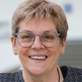

The team
Jim and Cathy run the lab together. Both came to OHSU in 2013 from the NIH intramural program, and both are faculty in the Department of Biomedical Engineering with appointments in the Knight Cancer Institute.
James A. Galbraith, PhD
Jim is a biomedical engineer and cell biologist who builds technologies, from nanofabrication to custom optics and quantitative imaging, to uncover how cells move molecules to where they are needed. His current work centers on how migrating cells control where and when soluble proteins are delivered. With Cathy, he discovered that actin treadmilling drives compartmentalized cytoplasmic flows, or “tradewinds,” that carry proteins to the cell’s leading edge (Nature Communications, 2026). He also designs and builds the lab’s custom microscopes, including the “pointillized” microscope developed with W.M. Keck Foundation support to visualize and control molecular dynamics across a single cell.
He earned his B.S.E. and PhD in Bioengineering at the University of Pennsylvania, dual-training in electrophysiology. After postdoctoral work in neuropathology and neuroanesthesia at UC San Diego, he joined the UCSD Bioengineering faculty, where he was named Teacher of the Year, and then the Mechanical Engineering faculty at Duke University. He spent more than a decade in the NIH intramural program at NINDS, where he was also assistant director of the NINDS light imaging facility, and was an HHMI Visiting Scientist at Janelia (2010–2012).
He leads the lab’s NSF-sponsored summer internship program in quantitative biophysics, which brings undergraduates into the lab for hands-on research.
Honors: W.M. Keck Foundation Award, with Cathy (2021); NIH Director’s Challenge Awards (2008, 2012); MBL Grass Faculty Award (2011); NIH/NINDS Merit Award (2005); UCSD Bioengineering Teacher of the Year (1995).
Service: Lab Director, Research Update in Neuroscience for Neurosurgeons (RUNN) course for neurosurgical residents (since 1995); co-chair, BME Undergraduate Education Committee (2018–2025); NSF Molecular and Cellular Biosciences review panels and NIH study sections; co-organizer, ASCB/EMBO minisymposia (2019–2021); founding moderator, µforum; co-founder, Pacific Northwest Quantitative Biology consortium.

Catherine G. Galbraith, PhD
Cathy is a quantitative cell biologist who studies how a cell’s molecular organization governs its behavior in health and disease. Trained as an engineer, she works at the interface of biology and physics, finding the rules that govern the cell’s molecular machinery by inventing the measurements that make it visible.
She earned her B.S.E. and M.S.E. in Bioengineering at the University of Pennsylvania and her PhD at UC San Diego with Richard Skalak and Shu Chien. She did her postdoctoral work in cell biology with Michael Sheetz at Duke University Medical Center, then spent 13 years in the NIH intramural program at NIDCR, first in Ken Yamada’s group and then running her own research program. With Jim, Hari Shroff and Eric Betzig, she produced the first super-resolution images of a dynamic structure in a living cell. That work was selected for Nature’s collection of papers underlying the 2014 Nobel Prize in Chemistry. She has been an HHMI Visiting Scientist at Janelia Research Campus since 2019, and previously from 2010 to 2012.
Honors: W.M. Keck Foundation Award, with Jim (2021); Faculty Opinions Member of the Year, Biological Physics (2021); NIH Director’s Challenge Awards (2008, 2012); MBL Lucy Lemann Fellowship and Grass Faculty Awards; BMES Young Investigator Award (1997).
Service: Editorial Board, Biophysical Journal (2016–2022); NIH and NSF review panels; co-founder, Pacific Northwest Quantitative Biology consortium.
Who we work with
- Luke Lavis Lab, HHMI JaneliaFluorophore chemistry; spontaneously blinking and photochromic dyes.
- Laura Waller Lab, UC BerkeleyComputational imaging.
- Brian English, HHMI JaneliaSenior scientist on our Janelia Visiting Scientist projects.
- Mingxuan Cai, UC BerkeleyComputational imaging, through a CZI Biohub collaboration.
- Colin Galbraith, University of UtahAI and visualization consultant. A former lab intern as a UCLA undergraduate, Colin is now a PhD candidate in computer visualization.
Former trainees
- Zenya BainSummer intern, 2024 · UCLA undergraduate. Goldwater Scholar (2026).
- Renata HemstreetSummer intern, 2024 · Oregon State University BME Honors undergraduate. Now an M.S. student at Stanford.
- Nhi HoPostbaccalaureate fellow, 2020–2021. Now a graduate student at the University of Washington.
- Nathan SmithUndergraduate researcher (Portland State) and postbaccalaureate fellow, 2019–2021; actin cytoskeleton and directional migration. Now an internal medicine resident.
- Ella TschebotarjewHonors thesis student, Portland State University, 2018–2021; mechanobiology of metastasis in 3D culture. Now a chemist.
- Nate EvansRotation student, OHSU DMICE, 2019.
- Monique LaJeunesseQBB summer intern, 2017; quantitative metrics of cell migration. Now at Cabot Microelectronics.
- Dan MillerRotation student, OHSU Neuroscience Graduate Program, 2016; axonal pathfinding and actin dynamics. Now a research scientist at Minerva Biotechnologies.
- Eric SacksPostbaccalaureate fellow, 2015–2016; quantitative analysis for super-resolution microscopy. NSF GRFP Honorable Mention; went on to the UC Berkeley Biophysics PhD program.
- Scott BreitensteinBME graduate student, 2015–2016. Now a senior engineer at Analog Photonics.
- Laura VossLewis & Clark undergraduate and intern, 2015–2016; super-resolution imaging of adhesions in 3D culture. Two-time Miller Fellow; now a genetic counselor at OHSU.
- Luke HelgesonPostdoctoral fellow, 2015. Now an associate director at SystImmune.
- Will VossResearch associate, 2014–2016; vinculin in cell–ECM interaction. Olympus BioScapes Honorable Mention; went on to a postdoc at UT Austin.
- Smith FreemanReed College undergraduate and the lab’s first hire at OHSU, 2014. Now a graduate student at the University of Minnesota.
- Ian GalbraithSummer intern; MATLAB tools to analyze cell migration patterns.